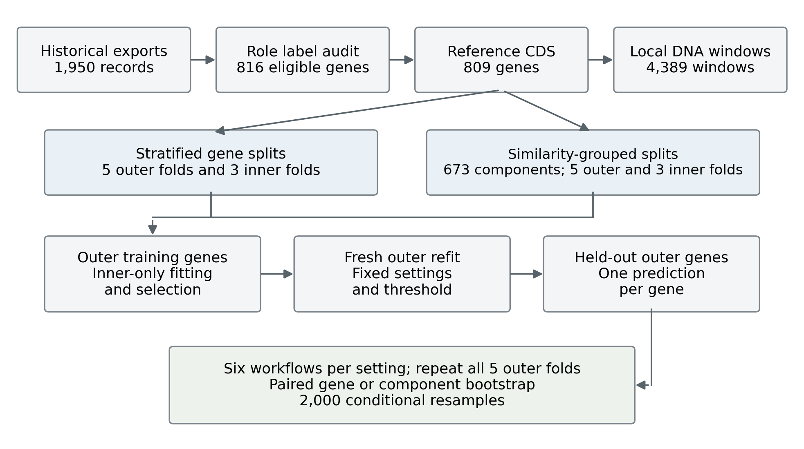
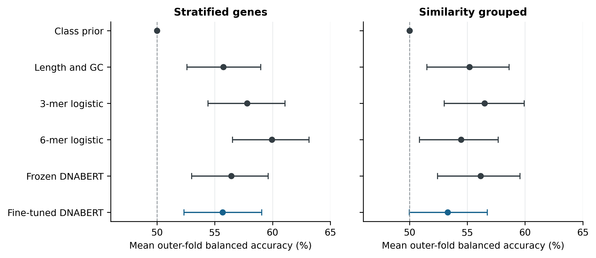
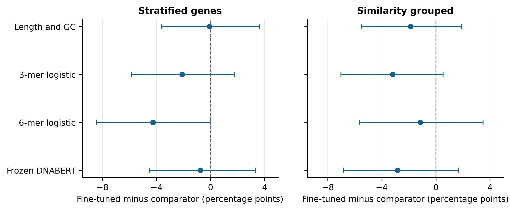

Nested evaluation of coding sequence models for oncogene and tumor suppressor classification
Zelun He
Final author list and affiliations [AUTHOR CONFIRMATION REQUIRED]
Correspondence and ORCID [AUTHOR TO SUPPLY]
Abstract
Background: Pretrained DNA models may encode information useful for cancer gene classification, but their incremental value over sequence composition requires evaluation that respects gene identity and sequence relatedness. We assessed whether frozen or fine-tuned DNABERT representations improve discrimination between exclusively annotated oncogenes and tumor suppressor genes from reference coding sequences.
Methods: An audit of historical COSMIC and OncoKB exports identified 816 eligible genes; reference mapping and sequence quality control retained 809 genes comprising 441 oncogenes and 368 tumor suppressors. One transcript per gene was selected using a fixed MANE Select, Ensembl Canonical, and longest-translation hierarchy on GRCh38.p14 and Ensembl release 114. Complete spliced coding sequences were represented through 4,389 local windows. We used frozen five-fold outer and three-fold inner cross-validation under stratified gene splits and protein-similarity-grouped splits. Comparators were a class-prior predictor and logistic regression using length/GC, 3-mer frequencies, 6-mer frequencies, or frozen DNABERT embeddings. Fine-tuning used one learning rate, at most two inner epochs, and 40 fresh neural fits. We estimated conditional uncertainty using 2,000 paired gene or homology-component bootstrap resamples.
Results: Mean outer-fold balanced accuracy for fine-tuned DNABERT was 55.68% (95% interval 52.34–59.05%) under stratified splitting and 53.31% (49.98–56.74%) under grouped splitting. Frozen DNABERT achieved 56.44% and 56.16%, respectively. The highest observed composition-baseline scores were 59.95% for stratified 6-mers and 56.50% for grouped 3-mers. Fine-tuning minus grouped 3-mer performance was −3.19 percentage points (95% interval −7.02 to +0.53). All paired primary-metric intervals comparing fine-tuning with the four nonconstant comparators included zero.
Conclusions: The completed short fine-tuning protocol did not establish an advantage over inexpensive sequence features or frozen embeddings. These results support explicit composition baselines and similarity-aware nested evaluation, while leaving broader optimization, repeated-training variability, and alternative sequence inputs unresolved.
Keywords: oncogene; tumor suppressor gene; coding sequence; DNABERT; nested cross-validation; homology; reproducibility
1 Introduction
Oncogenes and tumor suppressor genes describe different modes through which gene dysfunction can contribute to cancer. Activating changes can promote oncogenic activity, whereas loss or reduction of tumor-suppressive function can facilitate malignancy. These categories summarize accumulated biological evidence and can depend on molecular and cellular context. Expert resources such as the COSMIC Cancer Gene Census and OncoKB provide structured annotations for studying these roles [1,2]. They do not imply that every cancer-associated gene has one context-independent binary function.
This study asks a restricted prediction question: among genes with resolved, exclusive oncogene or tumor-suppressor annotations, how accurately can a model recover that annotation from the normal reference coding sequence alone? The input contains neither a patient's tumor genome nor observed somatic alterations. The task therefore concerns association between reference sequence and curated gene role, rather than detection of cancer, identification of pathogenic variants, or discovery of drivers among all human genes.
Pretrained DNA language models offer a plausible representation for this task because they encode nucleotide context before supervised fitting. DNABERT uses overlapping k-mer tokens and self-supervised pretraining, with subsequent adaptation to sequence tasks [3]. However, a useful representation for one genomic endpoint need not improve another. A classifier may also exploit comparatively simple correlates, including sequence length, GC content, or oligonucleotide frequencies. Measuring incremental benefit requires these alternatives to be evaluated on the same genes and partitions.
Evaluation introduces a second difficulty. Different genes can share extensive sequence similarity, while multiple windows from one gene are computational observations of the same labeled biological unit. Splitting windows independently would allow direct gene overlap. Splitting genes randomly can still place related genes across partitions. Similarity-aware partitioning addresses a different generalization question and should apply within model development as well as final assessment [4]. Model and threshold selection also need an evaluation layer that remains outside those choices [5].
We constructed an auditable benchmark from recovered annotation exports, a fixed transcript policy, and frozen nested partitions. We compared simple features, frozen DNABERT embeddings, and a deliberately limited DNABERT fine-tuning workflow. The contribution is an evidence-backed comparison with explicit provenance and uncertainty, rather than a claim of a new model architecture or a clinically validated predictor. The completed CDS experiment provides a bounded negative finding: fine-tuning did not demonstrate improvement under the evaluated training budget.
2 Related work
Cancer gene annotation and role inference
The Cancer Gene Census organizes evidence about genes implicated in cancer, including their annotated roles [1]. OncoKB curates cancer-related molecular information and its clinical relevance [2]. Here, their historical role annotations define the supervised endpoint. Database membership alone was not interpreted as a role label, and agreement between resources was not treated as independent experimental validation.
Previous computational role-inference methods often use information generated by tumors. TUSON Explorer analyzes mutation patterns to infer tumor-suppressor and oncogene properties [6]. OncodriveROLE classifies cancer drivers using features of their alterations, including evidence relevant to loss of function or activation [7]. Our reference-CDS-only problem lacks those tumor-derived measurements. Its scores are therefore not directly comparable with those methods, which address different inputs and inference settings. We did not run a head-to-head benchmark against them.
Pretrained sequence representations
DNABERT transfers a BERT-style encoder to DNA through overlapping k-mer tokenization and masked-language-model pretraining [3]. We evaluate two distinct uses of its original 6-mer model: unchanged representations followed by a linear classifier, and supervised encoder adaptation with a new classification head. Keeping these workflows separate distinguishes information available to a simple probe from any additional benefit of encoder updates. This experiment does not compare DNA foundation models generally, nor does it test alternative checkpoints, layers, or long-context architectures.
Partitioning and model selection
SpanSeq demonstrates the importance of controlling sequence similarity during both development and assessment [4]. Our grouping is motivated by that principle but uses MMseqs2 protein alignments and connected components; the SpanSeq executable was not run. MMseqs2 provides the alignment search machinery [8], while the graph thresholds and transitive grouping define this study's operational challenge. Nested evaluation separates internal selection from outer assessment, addressing the selection-bias concerns described by Cawley and Talbot [5]. These safeguards define which generalization claims are defensible; they do not eliminate all uncertainty or all possible biological relatedness.
3 Methods
Cohort construction and label policy
The original COSMIC and OncoKB exports were recovered as exact bytes from repository commit 0b3b43e04fa7b613e6eec9634669cb5f05c3563f. They contained 758 and 1,192 records, respectively. The original database releases and download dates are [NOT RECORDED]. The commit date and COSMIC filename do not establish those dates; an OncoKB column referring to COSMIC CGC v99 does not establish either export's release. Source hashes and the recovery procedure are provided in the reproducibility supplement.
The exclusive-cancer-roles-v1 policy preserved raw records and joined identities through normalized symbols or shared source-provided Entrez or Ensembl identifiers. No fuzzy alias inference or automatic identifier reassignment was used. Conflicting stable identifiers were quarantined. OncoKB yes/no fields were parsed explicitly; missing values were distinguished from false values. COSMIC role tokens were interpreted as complete annotations rather than substring matches.
A gene was eligible when at least one source assigned an exclusive target role and no opposing, explicit dual-role, unresolved, or incomplete annotation prevented inclusion. An explicit absence of a target role in the other source did not itself create an opposing label. The cohort was consequently an exclusive-role union, not a consensus-only intersection. Of 1,292 identity groups, 447 were eligible oncogenes and 369 were eligible tumor suppressors. Excluded groups comprised 125 with explicit dual roles, 64 with unresolved annotations or identities, and 287 without a target-role annotation. Among eligible genes, 303 had matching exclusive-label support from both resources, 167 were supported by COSMIC without matching OncoKB label support, and 346 by OncoKB without matching COSMIC label support. These counts precede sequence attrition.
Table 1 summarizes the cohort. The older prototype's reported 579-gene dataset was not used as the size or provenance of this benchmark. Genes outside the binary cohort were not relabeled as negative examples.
Table 1 Cohort construction and sequence coverage
| Stage or attribute | Result |
|---|---|
| Recovered source records | 758 COSMIC + 1,192 OncoKB |
| Resolved identity groups | 1,292 |
| Excluded label groups | 125 dual role; 64 unresolved; 287 without target annotation |
| Eligible binary cohort | 816 genes: 447 OG and 369 TSG |
| CDS sequence exclusions | 7 genes: 4 unmapped, 2 ambiguous mappings, 1 ambiguous sequence |
| Completed CDS cohort | 809 genes: 441 OG and 368 TSG |
| Selected transcripts | 808 MANE Select; 1 Ensembl Canonical |
| CDS length in bases | Median 1,764; mean 2,516.5; range 135–43,524 |
| Total CDS and model windows | 2,035,842 bases; 4,389 windows |
| Detected homology components | 673; largest 13 genes; 586 singletons |
| All-input paired cohort for future work | 799 genes: 435 OG and 364 TSG |
OG, oncogene; TSG, tumor suppressor gene. Label-support counts in the text refer to the 816-gene cohort before sequence exclusions.
Reference sequence and transcript selection
We fixed the species to Homo sapiens, assembly to GRCh38.p14 (GCA_000001405.29), and annotation to Ensembl release 114 through the May 2025 archive. Source-provided stable identifiers were mapped within that archive. Only uniquely mapped protein-coding loci on chromosomes 1–22, X, or Y were eligible. Ambiguous primary mappings, duplicate selected loci, unavailable mappings, and noncoding or nonprimary loci were not resolved by choosing the first response.
One coding transcript was selected before inspecting its sequence quality. Candidate ranking prioritized MANE Select, then Ensembl Canonical, then longest annotated translation, with the lexicographically smallest stable transcript identifier breaking any remaining tie. MANE provides a shared Ensembl/RefSeq representative transcript framework [9]; it does not identify every tissue-relevant isoform. Among retained genes, 808 selected MANE Select transcripts and one, MUC16, selected an Ensembl Canonical transcript. No longest-translation fallback was needed.
The input was the complete spliced CDS of that transcript in transcriptional 5′ to 3′ orientation, excluding UTRs and introns. Negative-strand CDS returned by the API was already oriented and was not reverse-complemented again. Records retained the assembly and annotation release, gene/transcript versions, strand, sequence length, ambiguity fraction, and sequence hash. Reference metadata were checked around extraction; successful responses were cached with request provenance for offline replay.
Quality checks required nonempty IUPAC DNA, CDS length divisible by three, agreement with annotated translation length allowing a terminal stop codon, and a prespecified maximum non-ACGT fraction of zero. No alternate isoform was substituted after a selected transcript failed quality control. Non-ATG starts and missing terminal stops were flags rather than blanket exclusions. Seven eligible genes were lost: TRA, TRB, TRD, and TRG had no archived mapping; CRLF2 and SSX4 had ambiguous primary mappings; and RYBP had ambiguous CDS bases. Retention was 441/447 oncogenes and 368/369 tumor suppressors.
Window construction and gene representations
For CDS length L, we defined n = ceiling(L/510) balanced nonoverlapping windows using integer boundaries floor(iL/n) and floor((i+1)L/n). This covered every retained base exactly once without retaining only an initial prefix or creating an arbitrarily short trailing fragment. The 809 genes generated 4,389 windows covering 2,035,842 bases. Windows remained derived observations of genes and were never counted as independent labeled samples.
For DNABERT-6, a window of length l was converted into l−5 overlapping 6-mers with the model's fixed vocabulary, followed by its special tokens. Tokenization disabled truncation and checked exact token identities, encoded length, and unknown-token counts. The longest input contained 505 real tokens and two special tokens, within the 512-position limit. All 4,389 saved tokenization records contained zero unknown tokens.
Let h(w,t) denote the final-layer vector for real token t in window w. We first computed the mean of these vectors, excluding padding and special tokens. The gene representation was the sum of window means weighted by their raw base lengths divided by the complete CDS length. Thus each gene supplied one pooled 768-dimensional representation. The frozen workflow accumulated this weighted mean in float64 and stored it as float32; fine-tuning used differentiable pooling in the recorded model precision. Neither workflow used the BERT pooler output, learned attention pooling, or cross-window attention.
This construction preserves nucleotide coverage but does not recreate one full-gene attention pass. The five 6-mers crossing each raw-window boundary are not formed. Whole-CDS k-mer features, in contrast, include those boundary-spanning k-mers. The resulting representation difference is retained as a limitation rather than described as an exactly matched information budget.
Stratified and similarity-grouped evaluation
The gene-nested-homology-v1 manifest fixed five outer folds and three inner folds per outer training set in each of two settings, with seed 42. StratifiedKFold partitioned genes by class in the stratified setting. StratifiedGroupKFold approximately balanced classes while preserving connected homology components in the grouped setting. Both classes occurred in every required partition, so no fold reduction was needed. All models used the same outer and inner assignments within a setting; the two settings had intentionally different assignments. Actual outer test counts are reported in Table S1.
The stratified setting estimates classification of additional genes from the curated distribution without restricting the specified homology links. The grouped setting estimates classification outside training's detected near-full-length protein-homology components. Proteins were used only to define those components; classification inputs remained DNA. We retrieved each selected transcript's translation and checked its identifier, version, and length.
MMseqs2 revision 8cc5ce367b5638c4306c2d7cfc652dd099a4643f performed all-versus-all search with no prefilter, alignment mode 3, alignment output enabled, E-value at most 10⁻⁵, and candidate/acceptance limits sufficient for all 809 targets. The recorded search calculated 809² = 654,481 ordered alignments. An undirected edge was retained if either direction met all three conditions: exact identity nident/alnlen at least 0.30; aligned query-span and target-span coverage each at least 0.80; and E-value at most 10⁻⁵. Identity included internal alignment gaps in the denominator. Coverage was recomputed from integer coordinates rather than rounded percentages.
Connected components enforced transitive isolation, including mixed-label components. The graph contained 205 qualifying undirected edges and 673 components, including 586 singletons and 16 mixed-label components; the largest component contained 13 genes. Sequence-only diagnostics at identity thresholds 0.40, 0.50, and 0.70 were examined before model-score interpretation to assess feasibility, not to select a performance-maximizing threshold. Table S2 gives the corresponding graph summaries. The 0.30 rule is an operational broad homology challenge, not a universal family definition. Domain-only, remote, unequal-length, and unselected-isoform relationships may remain between partitions.
Fitting boundaries and checkpoint provenance
Every transcript, window, and input type inherited its audited gene identifier. Gene identities could not overlap among training, validation, and test sets. In grouped evaluation, the corresponding component identities also could not overlap, including across inner folds. Deterministic extraction, the label-independent homology graph, and the partition manifest were constructed before task fitting. A frozen encoder could process all genes because it performed no task-dependent fitting; each learned classifier and preprocessing step remained fold-specific.
The legacy checkpoint-916 was ineligible because its supervised exposure history could not be established. Missing weights, trainer state, split identifiers, and logs prevented verification, and historical train/test blobs were empty. This is an unverifiable history, not proof that the checkpoint was contaminated or clean. None of the reported pretrained-DNA workflows used that checkpoint.
We instead used the author-linked zhihan1996/DNA_bert_6 distribution pinned to revision a79a8fd96ad172f964a4dbef3f4d7545a5034baa. Configuration, vocabulary, tokenizer support files, and weight bytes were checked against recorded identities. Standard BERT classes loaded the encoder strictly, discarding the masked-language-model prediction head and rejecting missing or incompatible encoder tensors. No upstream custom Python was executed. Each supervised neural fit began with a fresh upstream encoder, new linear head, and new optimizer; a completed fit was not continued into a different fold. Upstream unsupervised exposure to human reference sequence remains possible and is distinct from supervised exposure to these labels.
Simple baselines and frozen embeddings
The class-prior predictor estimated the oncogene fraction using the current training genes and used threshold 0.5. The length/GC baseline used natural-log complete-CDS length and the fraction of G or C bases. The 3-mer and 6-mer baselines used all 64 or 4,096 ACGT k-mer frequencies, respectively, normalized by L−k+1 over the complete CDS. The vocabulary was fixed, overlapping k-mers were counted, and reverse complements were not collapsed.
Each nonconstant baseline used L2 logistic regression with an intercept, liblinear solver, maximum 3,000 iterations, tolerance 10⁻⁶, and C in {0.01, 0.1, 1}. StandardScaler means and variances were fitted using the current training genes only. Class weights were Ntrain/(2Nc), with counts at gene level. There was no feature selection, PCA, learned vocabulary, augmentation, or imputation.
Candidates were selected by mean inner-fold balanced accuracy at threshold 0.5, with ties preferring lower C and then the predefined candidate identifier. For the selected candidate, one inner out-of-fold probability per outer-training gene was collected. The threshold maximized balanced accuracy on this complete internal prediction set; ties preferred the value closest to 0.5 and then the smaller threshold. The search considered observed probabilities and the specified endpoint/default thresholds. A new classifier and scaler were then fitted on all outer-training genes. Outer-test labels were not used in these choices.
The frozen DNABERT workflow used last-layer pooled gene embeddings and exactly the same logistic-regression grid, fold-specific scaling, weighting, selection, and threshold rules. Its encoder remained unchanged. The original four baseline prediction sets were reused from the audited reference archive; frozen embeddings and fine-tuning were evaluated on the recorded Mac/MPS backend. This was a numerical adaptation of the documented CPU extraction workflow, not a claim that CPU and MPS produce bitwise-identical results.
DNABERT fine-tuning
Fine-tuning used a fresh 768-to-2 linear classification head and class-weighted gene-level cross-entropy. Head weights were initialized from a normal distribution with standard deviation 0.02 and biases to zero. AdamW used learning rate 2×10⁻⁵, weight decay 0.01, and global gradient-norm clipping at 1.0. Optimizer updates used up to four genes; window microbatches contained two windows. Each gene contributed one class-weighted loss, divided by the actual number of genes in its optimizer batch. Longer genes did not acquire extra labeled weight from having more windows. The unused BERT pooler was frozen. No learning-rate scheduler or learning-rate search was included.
To bound memory, the launcher first obtained the pooled representation without retaining all encoder activations, differentiated the gene loss with respect to that representation, and replayed window microbatches to accumulate encoder gradients. Random-number states were restored during replay to preserve the dropout realization. On-device checks compared replayed gradients with direct autograd and checked checkpoint round-trip, encoder updates, and padding invariance. These checks validate specific implementation properties, not general numerical equivalence across devices.
Each inner fit ran two epochs. The earliest epoch with the highest validation balanced accuracy at threshold 0.5 supplied that fold's internal probabilities. The decision threshold was chosen from the combined selected-epoch inner predictions using the same threshold rule as above. Outer refits started anew and used the ceiling of the median of the three selected epoch counts, without outer-test early stopping. Two settings × five outer folds × three inner fits plus one outer refit yielded 40 neural fits: 30 inner fits and 10 refits. One seed, one learning rate, and one pooling policy were evaluated. Equal partitions and endpoints should not be interpreted as equal optimization-search capacity across model families.
Outcomes and uncertainty
The primary endpoint was the unweighted mean of the five outer-fold balanced accuracies, with oncogene as the positive class. Balanced accuracy was the mean of oncogene recall and tumor-suppressor recall. We also retained outer-fold standard deviations and pooled out-of-fold accuracy, AUROC, average precision for each class, Matthews correlation coefficient, macro-F1, class-specific precision/recall, confusion counts, and Brier score. All metrics counted genes. Average precision is reported with the cohort prevalences of 441/809 oncogenes and 368/809 tumor suppressors.
For each setting, 2,000 paired bootstrap draws with seed 42 resampled 809 genes or 673 complete homology components with replacement. Component resampling retained every gene in each selected component, including its class and fold assignment. The same draw multiplicities were applied to every model. Each draw recomputed the mean-fold primary statistic and pooled secondary statistics; draws lacking either class within any outer fold were rejected and redrawn. No draws were rejected in this run. Percentiles 2.5 and 97.5 defined the 95% intervals. Pairwise differences were computed within each draw rather than from overlap of marginal intervals.
Intervals condition on the fitted models, selected epochs and thresholds, frozen splits, and observed cohort. They do not include retraining, seed, annotation, or split-regeneration variability, and they do not fully characterize uncertainty induced by overlapping cross-validation training sets. Five fold scores are not five independent experiments; their SD is not a confidence interval. All 15 unordered model pairs per setting were retained. Pairwise intervals are exploratory and were not adjusted for multiple comparisons. We did not define an equivalence margin or conduct an equivalence test.
Evidence verification and reproducibility
The completed result package contains a run manifest, identity record, tokenization audit, neural fits and partitions, inner and outer predictions, selections, frozen-probe evidence, on-device checks, and summary statistics. We verified the manifest's 14 artifact hashes and matched the recovered launcher to the recorded launcher hash. The frozen split hash also matched. We checked training/validation/test disjointness, grouped isolation, training-gene counts and class weights, epoch selection, threshold reconstruction, paired prediction identities, finite probabilities, and thresholded labels.
For this manuscript, pooled metrics were independently checked with scikit-learn, fold-level balanced accuracy was reconstructed, and the documented implementation replayed the 2,000-draw summaries and all pairwise intervals. These are verification of saved evidence. Full neural training, reference extraction, and MMseqs2 alignment search were not rerun for manuscript preparation. Binary learned checkpoints are absent from the lightweight result archive. The supplement specifies software versions, identifiers, file paths, and remaining reproducibility gaps.

Figure 1 Cohort and nested evaluation. Historical role annotations define an exclusive-role cohort; reference CDS mapping and quality control retain 809 genes. Within each split setting, all workflows share fixed five-fold outer and three-fold inner assignments. Only outer-training genes inform fitted preprocessing, model choices, epochs, and thresholds. Fresh refits generate one outer prediction per gene. Gene or homology-component resampling pairs the workflows for conditional uncertainty analysis. The schematic represents the shared evaluation boundaries, not identical tuning budgets.
4 Results
Cohort coverage and partition diagnostics
The retained CDS cohort contained 809 genes, with median sequence length 1,764 bases and range 135–43,524 bases. Mean length was 2,516.5 bases, and no retained input contained ambiguous bases. The transcript choices included CTG-initiated MYC and VEGFA CDS records, retained with non-ATG-start flags. No identical complete CDS sequences were reported among retained genes; this does not exclude partial similarity or homology.
The recorded graph had 165 qualifying edges crossing stratified outer folds and zero crossing grouped outer folds. Grouped training, validation, and test partitions also had no saved component overlap. The search returned a partial MUC16 self-alignment spanning 7,248 of 14,507 amino acids, whereas the other 808 self-alignments were full length. Thus the grouping claim is limited to the stated detected-homology graph, despite exhaustive enumeration of candidate pairs.
All 40 neural fits completed, recorded strict loading, and had changed encoder hashes after training. Of 30 inner fits, 21 selected epoch two and nine selected epoch one. Eight outer refits used two epochs and two used one epoch. Fine-tuned thresholds ranged from 0.464852 to 0.534890. The combined prediction table contained 9,708 records: exactly 809 genes × six models × two settings, including 1,618 fine-tuned predictions. Completion and encoder updates establish that fitting occurred; they do not establish predictive improvement.
Primary performance
Table 2 and Figure 2 report mean outer-fold balanced accuracy. Fine-tuned DNABERT reached 55.68% under stratified splitting and 53.31% under similarity grouping. Its outer-fold SDs were 5.16 and 3.60 percentage points, respectively. The grouped conditional interval extended to 49.98%, so this analysis did not clearly distinguish its primary performance from the 50% class-prior reference in that setting.
Frozen DNABERT reached 56.44% and 56.16%. The highest observed stratified score was 59.95% for 6-mer logistic regression; the highest observed grouped score was 56.50% for 3-mer logistic regression. These are descriptive rankings of already evaluated workflows, not an independently assessed selection rule for a winning method. Every nonconstant workflow had a lower grouped point estimate than its stratified estimate, but the magnitude varied. Differences between settings do not isolate a causal quantity of homology-driven inflation because fold composition, training sets, and fitted models also changed.
Table 2 Primary performance with conditional 95 percent bootstrap intervals
| Workflow | Stratified genes | Similarity grouped |
|---|---|---|
| Class prior | 50.00 [50.00, 50.00] | 50.00 [50.00, 50.00] |
| Length and GC | 55.75 [52.60, 58.98] | 55.18 [51.51, 58.62] |
| 3-mer logistic | 57.79 [54.41, 61.08] | 56.50 [53.01, 59.94] |
| 6-mer logistic | 59.95 [56.54, 63.17] | 54.47 [50.87, 57.68] |
| Frozen DNABERT | 56.44 [52.99, 59.63] | 56.16 [52.43, 59.57] |
| Fine-tuned DNABERT | 55.68 [52.34, 59.05] | 53.31 [49.98, 56.74] |
Values are percentages of mean outer-fold balanced accuracy. Intervals use 2,000 paired draws of genes or complete homology components and condition on fixed fits and thresholds. They are not retraining intervals. The class-prior interval is degenerate for this balanced-accuracy endpoint.

Figure 2 Primary balanced accuracy for six workflows. Points show the unweighted mean of five outer-fold balanced accuracies; bars show conditional 95% percentile intervals from 2,000 paired bootstrap draws. Resampling units are genes for stratified evaluation and complete homology components for grouped evaluation. Blue identifies fine-tuned DNABERT; the dashed line is the 50% class-prior balanced-accuracy reference. Intervals exclude retraining and split-regeneration variability.
Paired model comparisons
Fine-tuning had lower primary point estimates than all four nonconstant comparators in both settings (Table 3; Figure 3). Relative to frozen DNABERT, the difference was −0.754 percentage points under stratified splitting and −2.845 points under grouped splitting. Relative to 3-mers, the differences were −2.113 and −3.193 points. All eight corresponding paired intervals included zero. The stratified fine-tuning-minus-6-mer interval had an upper endpoint of +0.001982 percentage points; retaining this precision prevents rounding from implying a strictly negative interval.
Fine-tuning exceeded the class-prior point estimate by 5.681 points under stratified splitting, with conditional interval +2.345 to +9.053, and by 3.311 points under grouped splitting, with interval −0.025 to +6.740. The former is evidence of above-prior discrimination conditional on the observed fits, not evidence that fine-tuning improves on the sequence-feature comparators. Conversely, intervals including zero do not establish equivalence. All model-pair primary differences appear in Table S3.
Table 3 Fine tuned DNABERT minus each comparator
| Comparator | Stratified difference | Grouped difference |
|---|---|---|
| Class prior | +5.681 [+2.345, +9.053] | +3.311 [-0.025, +6.740] |
| Length and GC | -0.071 [-3.620, +3.599] | -1.871 [-5.489, +1.868] |
| 3-mer logistic | -2.113 [-5.831, +1.763] | -3.193 [-7.016, +0.529] |
| 6-mer logistic | -4.270 [-8.412, +0.002] | -1.161 [-5.634, +3.488] |
| Frozen DNABERT | -0.754 [-4.522, +3.315] | -2.845 [-6.848, +1.658] |
Differences and conditional 95% intervals are in percentage points of mean outer-fold balanced accuracy. Negative values favor the comparator. The stratified 6-mer upper endpoint is +0.001982 percentage points before rounding. Intervals are not adjusted for multiple comparisons; no equivalence margin was defined.

Figure 3 Fine-tuning differences relative to nonconstant comparators. Each point is fine-tuned DNABERT minus the comparator in mean outer-fold balanced accuracy, in percentage points. Bars are conditional paired 95% bootstrap intervals using common resamples within each setting. Negative values favor the comparator; zero denotes no difference. Every displayed interval includes zero, including the stratified 6-mer interval whose unrounded upper endpoint is +0.001982 percentage points. No superiority, equivalence, or multiplicity-adjusted inference is implied.
Secondary outcomes and class behavior
Fine-tuned pooled AUROC was 0.565 under stratified splitting and 0.548 under grouping, compared with 0.593 and 0.583 for frozen DNABERT. The highest observed AUROCs were 0.643 for stratified 6-mers and 0.595 for grouped 3-mers. Fine-tuned MCC was 0.114 and 0.065. These outcomes did not reveal a strong ranking advantage hidden by the thresholded primary metric (Table 4).
Fine-tuned oncogene/tumor-suppressor recalls were 0.576/0.538 under stratification and 0.546/0.519 under grouping. In the grouped setting, the fine-tuned model correctly classified 241 of 441 oncogenes and 191 of 368 tumor suppressors, leaving 200 false negatives and 177 false positives with oncogene as positive. Its grouped Brier score was 0.253, compared with 0.248 for the class-prior predictor. The grouped 6-mer baseline's Brier score was 0.309. These values indicate that ranking or thresholded discrimination should not be interpreted as calibrated probabilities; no calibration procedure was fitted. Full class-wise point estimates and confusion counts are provided in Table S4.
The class-prior model predicted oncogene for every gene and had exactly 50% balanced accuracy. Its within-fold AUROC was 0.5; the pooled AUROC differed slightly from 0.5 because training prevalence, and hence its assigned constant probability, varied across outer folds. Pooled ranking metrics combine outputs from different outer models and have a different interpretation from a within-fold score or the mean-fold primary endpoint.
Table 4 Secondary pooled outer out of fold performance
| Setting | Workflow | AUROC | AP OG | AP TSG | MCC | Brier |
|---|---|---|---|---|---|---|
| Stratified | Class prior | 0.497 | 0.544 | 0.453 | 0.000 | 0.248 |
| Stratified | Length and GC | 0.578 | 0.595 | 0.538 | 0.118 | 0.246 |
| Stratified | 3-mer logistic | 0.585 | 0.606 | 0.534 | 0.155 | 0.251 |
| Stratified | 6-mer logistic | 0.643 | 0.655 | 0.578 | 0.198 | 0.256 |
| Stratified | Frozen DNABERT | 0.593 | 0.616 | 0.518 | 0.129 | 0.260 |
| Stratified | Fine-tuned DNABERT | 0.565 | 0.597 | 0.496 | 0.114 | 0.249 |
| Grouped | Class prior | 0.498 | 0.544 | 0.454 | 0.000 | 0.248 |
| Grouped | Length and GC | 0.569 | 0.593 | 0.533 | 0.103 | 0.246 |
| Grouped | 3-mer logistic | 0.595 | 0.625 | 0.541 | 0.132 | 0.246 |
| Grouped | 6-mer logistic | 0.590 | 0.622 | 0.526 | 0.089 | 0.309 |
| Grouped | Frozen DNABERT | 0.583 | 0.623 | 0.515 | 0.123 | 0.266 |
| Grouped | Fine-tuned DNABERT | 0.548 | 0.580 | 0.488 | 0.065 | 0.253 |
All entries are point estimates on 809 genes per workflow and setting. AP, average precision; MCC, Matthews correlation coefficient. OG prevalence is 0.545117 and TSG prevalence is 0.454883. Lower Brier score is better. Cross-fold probability pooling affects the interpretation of ranking metrics.
Status of alternative sequence inputs
Prior extraction produced usable 2,048-base promoters for all 809 CDS genes and three sampled 2,048-base genomic regions for each of 799 genes. The all-input intersection contained 435 oncogenes and 364 tumor suppressors. Promoter and genomic model performance, paired input differences, and the proposed budget-matched ablation are [NOT EVALUATED IN THE COMPLETED CDS EXPERIMENT]. No scores from those planned experiments are included. The 809-gene CDS results cannot substitute for a CDS arm refitted and assessed on the common 799-gene cohort.
5 Discussion
The completed benchmark did not demonstrate incremental value from the evaluated DNABERT fine-tuning workflow over composition features or frozen embeddings. This conclusion follows from paired held-out predictions rather than training loss or proof that weights changed. Frozen representations and 3-mer frequencies had similar grouped point estimates, while all tested workflows showed modest discrimination. The findings support retaining inexpensive baselines as central comparators when transferring pretrained sequence models to small labeled gene cohorts.
Several explanations remain plausible but untested. The curated role may be more closely related to tumor alteration patterns, cellular context, or functional mechanisms than to the available reference CDS. Local-window mean pooling can discard order and interactions between distant regions. The single-learning-rate, one- or two-epoch refit budget may also provide inadequate or uneven adaptation. These possibilities cannot be distinguished by the completed experiment. In particular, the negative result does not establish that additional training would succeed, or that DNABERT is intrinsically unsuitable for all cancer gene tasks.
The stratified and grouped settings answer complementary questions. Gene-level stratification protects against literal gene/window overlap while allowing the detected coding-homology links to cross partitions. Grouping removes those specified links from both internal development and outer assessment. The 6-mer primary score decreased from 59.95% to 54.47%, whereas the frozen score changed from 56.44% to 56.16%. Such model-dependent differences caution against assuming that one random-split result characterizes transfer beyond related genes. They do not demonstrate a particular mechanism of memorization or a causal amount of leakage inflation.
Data curation is part of the endpoint definition. The source audit corrected parsing and identity ambiguities, excluded explicit dual roles, and exposed uncertainty about historical database releases. A union of exclusive labels increases coverage relative to a consensus-only cohort but can retain source-specific ascertainment and annotation differences. The 303 genes with matching source support provide a documented starting point for a future sensitivity analysis, although its post-sequence cohort size and performance have not been evaluated. Excluding dual-role genes simplifies the classification task and limits its biological scope.
The reproducibility structure makes the result inspectable: gene-level predictions link to fixed partitions, selections, fit identifiers, and upstream initialization. It also exposes unfinished release work. Hashes establish consistency among available bytes, not authenticity of the biological annotations or validity of the scientific endpoint. Permanent deposition of the exact launcher, manifests, allowable data, and learned checkpoints would strengthen independent replication. Their availability should be distinguished from the completed lightweight audit.
Further work should be framed as a new evaluation rather than tuning to improve these already examined outer scores. The documented paired design uses the same 799 genes for CDS, promoter, and genomic inputs throughout training, selection, and testing. Promoters span transcription-relative offsets [−1536,+512) around the selected transcript's start site; genomic controls use label-independent recorded coordinates. A secondary 2,048-base-per-gene comparison was specified to address unequal natural sequence budgets. Repeated-seed fitting, an independently fixed expanded optimization budget, and external validation could address different uncertainties, but their outcomes remain unknown.
6 Limitations
First, this is a closed-cohort binary annotation task. It excludes dual-role, unresolved, and unannotated genes and does not include a neutral-gene class. Generalization to arbitrary genes, tumor types, variants, or patient outcomes has not been tested. A predicted role is not biological validation of that role.
Second, the historical label exports have unknown original releases and download dates. Stable hashes permit recovery of the analyzed snapshot but cannot resolve its clinical or biological currency. The transcript policy selects one representative isoform; it does not model tissue-specific transcription, alternative splicing, introns, regulatory context, or somatic alterations.
Third, the homology graph is incomplete as a representation of biological relatedness. The near-full-length coverage rule can miss shared domains, remote homologs, and unequal-length family members. Most components are singletons, and MUC16 had a flagged partial self-alignment. Group isolation therefore means isolation of the declared detected components, not complete independence of gene function or evolutionary history.
Fourth, neural evaluation covers one checkpoint, last-layer mean pooling, one seed, one learning rate, and two inner epochs. It cannot support a general ranking of model families or optimized upper bounds. Baselines and the frozen probe each searched three regularization values, while fine-tuning searched epoch duration within a single learning-rate setting. Their shared partitions permit paired workflow comparisons but do not make the search budgets equivalent.
Fifth, intervals are conditional bootstrap summaries rather than complete repeated-experiment uncertainty. Overlapping training sets, training stochasticity, alternative splits, annotation choices, and upstream pretraining uncertainty are not fully represented. Multiple exploratory comparisons and prior inspection of this cohort's baseline results further limit confirmatory interpretation. No equivalence or noninferiority margin was specified.
Finally, numerical execution used an exploratory Apple MPS adaptation. Device checks passed, but portability of final scores across hardware was not established. Unsupervised upstream exposure to benchmark reference sequences is possible. Full learned binary checkpoints, hardware chip model, peak memory, and a verified end-to-end compute-cost record are [NOT AVAILABLE IN THE REVIEWED RESULT PACKAGE]. Public deposition and a complete training replication remain outstanding.
7 Conclusion
In an auditable nested CDS benchmark of 809 exclusively annotated cancer genes, the evaluated DNABERT fine-tuning workflow achieved 55.68% stratified and 53.31% similarity-grouped mean balanced accuracy. Paired uncertainty intervals did not establish improvement over length/GC features, k-mer frequencies, or frozen DNABERT embeddings. The main empirical contribution is a bounded negative result accompanied by audited labels, a consistent transcript policy, gene-safe and component-safe evaluation, and traceable predictions. Broader optimization, alternative sequence inputs, external validation, and stronger reproducibility releases require separate evidence.
8 Declarations
Data and code availability
Reference methods and frozen evaluation records are available in Zelun-He/gene_classifier_project, identified by commit 132253d7557c87db2c755b6f85a7078005029490 [10]. The completed local experiment is identified by run identity f725005e5126dcf152bbca9bb21c1b7644ef9cbf2014640f60a13ad69a3f1afa; the reviewed results archive is mac-cds-results.zip. The exact Mac launcher was recovered and hash-verified. Permanent public accessions for this launcher and the completed result/checkpoint release are [NOT YET PROVIDED]. Source database exports and generated sequence data were not assumed to be unrestricted for redistribution. A venue-facing deposition should provide the allowable materials, recovery instructions, and applicable source terms. No research-archive DOI is claimed for this study.
Ethics and consent
The analysis used curated gene annotations and reference sequences. No participants were recruited and no individual-level clinical records were analyzed. [AUTHOR CONFIRMATION REQUIRED: applicable institutional and venue ethics/consent statement; no formal exemption determination is asserted.]
Authorship funding and competing interests
[AUTHOR CONFIRMATION REQUIRED: final author list and order, affiliations, correspondence details, funding sources and grant numbers, competing interests, CRediT contributions, and acknowledgments.] The earlier research was conducted with supervision from Dr. Hui Liu; authorship and acknowledgment wording require contributor agreement. No absence of funding or competing interests is assumed.
Generative artificial intelligence assistance
Generative AI assisted manuscript drafting, evidence checking, and figure preparation. Human authors must verify the scientific interpretation, code, results, references, and final submission. [AUTHOR CONFIRMATION REQUIRED: complete disclosure of tools, versions, other uses during the project, and wording required by the selected venue.]
References
1. Sondka Z, Bamford S, Cole CG, Ward SA, Dunham I, Forbes SA. The COSMIC Cancer Gene Census: describing genetic dysfunction across all human cancers. Nature Reviews Cancer. 2018;18:696–705. https://doi.org/10.1038/s41568-018-0060-1
2. Chakravarty D, Gao J, Phillips SM, et al. OncoKB: A Precision Oncology Knowledge Base. JCO Precision Oncology. 2017;2017:PO.17.00011. https://doi.org/10.1200/PO.17.00011
3. Ji Y, Zhou Z, Liu H, Davuluri RV. DNABERT: pre-trained Bidirectional Encoder Representations from Transformers model for DNA-language in genome. Bioinformatics. 2021;37(15):2112–2120. https://doi.org/10.1093/bioinformatics/btab083
4. Ferrer Florensa A, Almagro Armenteros JJ, Nielsen H, Aarestrup FM, Clausen PTLC. SpanSeq: similarity-based sequence data splitting method for improved development and assessment of deep learning projects. NAR Genomics and Bioinformatics. 2024;6(3):lqae106. https://doi.org/10.1093/nargab/lqae106
5. Cawley GC, Talbot NLC. On Over-fitting in Model Selection and Subsequent Selection Bias in Performance Evaluation. Journal of Machine Learning Research. 2010;11:2079–2107. https://jmlr.org/papers/v11/cawley10a.html
6. Davoli T, Xu AW, Mengwasser KE, et al. Cumulative haploinsufficiency and triplosensitivity drive aneuploidy patterns and shape the cancer genome. Cell. 2013;155(4):948–962. https://doi.org/10.1016/j.cell.2013.10.011
7. Schroeder MP, Rubio-Perez C, Tamborero D, Gonzalez-Perez A, Lopez-Bigas N. OncodriveROLE classifies cancer driver genes in loss of function and activating mode of action. Bioinformatics. 2014;30(17):i549–i555. https://doi.org/10.1093/bioinformatics/btu467
8. Steinegger M, Söding J. MMseqs2 enables sensitive protein sequence searching for the analysis of massive data sets. Nature Biotechnology. 2017;35:1026–1028. https://doi.org/10.1038/nbt.3988
9. Morales J, Pujar S, Loveland JE, et al. A joint NCBI and EMBL-EBI transcript set for clinical genomics and research. Nature. 2022;604:310–315. https://doi.org/10.1038/s41586-022-04558-8
10. He Z. Gene classifier project. Reference methods and evaluation artifacts at commit 132253d7557c87db2c755b6f85a7078005029490. GitHub. https://github.com/Zelun-He/gene_classifier_project/tree/132253d7557c87db2c755b6f85a7078005029490
Supplementary methods and results
Outer folds and fine tuning selections
Table S1 gives one-based display indices; machine-readable records use zero-based indices. Both split settings retained the same 809 genes, although assignments differed. Inner folds were confined to the corresponding outer-training set. Displayed thresholds are rounded to six decimals; prediction reconstruction uses the full saved precision. The mean-fold endpoint should not be confused with the pooled balanced accuracy in Table S4.
Table S1 Outer test class counts and neural selections
| Setting | Fold | Test OG / TSG | Train N | Inner epochs | Refit epochs | Threshold | BA % |
|---|---|---|---|---|---|---|---|
| Stratified | 1 | 89 / 73 | 647 | 2/1/2 | 2 | 0.524430 | 50.62 |
| Stratified | 2 | 88 / 74 | 647 | 2/2/1 | 2 | 0.521269 | 58.71 |
| Stratified | 3 | 88 / 74 | 647 | 2/1/2 | 2 | 0.488490 | 55.14 |
| Stratified | 4 | 88 / 74 | 647 | 2/2/1 | 2 | 0.534890 | 51.12 |
| Stratified | 5 | 88 / 73 | 648 | 1/1/2 | 1 | 0.513798 | 62.81 |
| Grouped | 1 | 88 / 73 | 648 | 2/2/2 | 2 | 0.502527 | 50.34 |
| Grouped | 2 | 88 / 73 | 648 | 2/1/1 | 1 | 0.495309 | 54.57 |
| Grouped | 3 | 88 / 74 | 647 | 1/2/2 | 2 | 0.464852 | 58.83 |
| Grouped | 4 | 88 / 73 | 648 | 2/2/2 | 2 | 0.504425 | 52.76 |
| Grouped | 5 | 89 / 75 | 645 | 2/2/2 | 2 | 0.491030 | 50.05 |
Fold display indices are one-based. All model workflows use these test class counts within each setting. Inner epochs are the selected counts for the three inner folds. BA is outer-fold balanced accuracy for fine-tuned DNABERT. Test genes equal the sum of OG and TSG counts.
Homology threshold diagnostics
The following sequence-only diagnostics document the chosen operational grouping boundary. They are not model-performance sensitivity experiments. E-value and bidirectional coverage requirements were unchanged. Mixed-label components were not split to obtain cleaner class partitions.
Table S2 Protein homology threshold diagnostics
| Identity | Edges | Components | Singletons | Mixed label | Largest group |
|---|---|---|---|---|---|
| 0.30 | 205 | 673 | 586 | 16 | 13 |
| 0.40 | 143 | 699 | 616 | 13 | 7 |
| 0.50 | 101 | 735 | 681 | 6 | 7 |
| 0.70 | 42 | 773 | 744 | 3 | 3 |
All thresholds retain bidirectional span coverage of at least 0.80 and E-value at most 10⁻⁵. The primary evaluation uses identity 0.30. No model scores at the alternative thresholds are asserted.
All primary paired model comparisons
Table S3 includes all 15 unordered pairs in each setting, expressed as the first named model minus the second in percentage points. A lower Brier score has a different favorable direction, but this table contains only the primary balanced-accuracy statistic. Intervals are conditional percentile intervals without multiplicity adjustment. Other saved paired metrics remain in summary.json.
Table S3 All paired primary comparisons
| First workflow minus second workflow | Stratified difference | Grouped difference |
|---|---|---|
| Class prior minus Length and GC | -5.752 [-8.984, -2.598] | -5.182 [-8.620, -1.515] |
| Class prior minus 3-mer logistic | -7.794 [-11.076, -4.406] | -6.504 [-9.936, -3.007] |
| Class prior minus 6-mer logistic | -9.951 [-13.166, -6.544] | -4.472 [-7.681, -0.867] |
| Class prior minus Frozen DNABERT | -6.436 [-9.629, -2.993] | -6.157 [-9.572, -2.426] |
| Class prior minus Fine-tuned DNABERT | -5.681 [-9.053, -2.345] | -3.311 [-6.740, +0.025] |
| Length and GC minus 3-mer logistic | -2.042 [-6.170, +2.045] | -1.322 [-5.810, +3.195] |
| Length and GC minus 6-mer logistic | -4.199 [-8.408, +0.110] | +0.710 [-3.769, +5.459] |
| Length and GC minus Frozen DNABERT | -0.684 [-4.684, +3.255] | -0.975 [-5.527, +3.731] |
| Length and GC minus Fine-tuned DNABERT | +0.071 [-3.599, +3.620] | +1.871 [-1.868, +5.489] |
| 3-mer logistic minus 6-mer logistic | -2.157 [-5.824, +1.461] | +2.032 [-2.192, +6.361] |
| 3-mer logistic minus Frozen DNABERT | +1.358 [-1.759, +4.653] | +0.347 [-3.147, +3.721] |
| 3-mer logistic minus Fine-tuned DNABERT | +2.113 [-1.763, +5.831] | +3.193 [-0.529, +7.016] |
| 6-mer logistic minus Frozen DNABERT | +3.515 [-0.178, +7.415] | -1.685 [-6.095, +2.537] |
| 6-mer logistic minus Fine-tuned DNABERT | +4.270 [-0.002, +8.412] | +1.161 [-3.488, +5.634] |
| Frozen DNABERT minus Fine-tuned DNABERT | +0.754 [-3.315, +4.522] | +2.845 [-1.658, +6.848] |
Values are percentage-point differences in mean outer-fold balanced accuracy with conditional 95% paired bootstrap intervals. Unordered pairs appear once; the displayed subtraction direction is explicit. No multiplicity adjustment is applied.
Class wise outcomes and confusion counts
Table S4 gives pooled gene-level point estimates. TP and FN count oncogenes; TN and FP count tumor suppressors. Both settings use OG prevalence 0.545117 and TSG prevalence 0.454883. The run summary retains conditional intervals for non-count secondary metrics; no new significance claims are made from these descriptive values.
Table S4a Stratified pooled class wise outcomes
| Workflow | Acc | BA | Macro F1 | Prec OG | Rec OG | Prec TSG | Rec TSG |
|---|---|---|---|---|---|---|---|
| Class prior | 0.545 | 0.500 | 0.353 | 0.545 | 1.000 | 0.000 | 0.000 |
| Length and GC | 0.567 | 0.558 | 0.557 | 0.592 | 0.662 | 0.528 | 0.454 |
| 3-mer logistic | 0.581 | 0.578 | 0.578 | 0.616 | 0.615 | 0.539 | 0.541 |
| 6-mer logistic | 0.596 | 0.599 | 0.596 | 0.650 | 0.560 | 0.548 | 0.639 |
| Frozen DNABERT | 0.561 | 0.564 | 0.561 | 0.613 | 0.528 | 0.515 | 0.601 |
| Fine-tuned DNABERT | 0.559 | 0.557 | 0.557 | 0.599 | 0.576 | 0.514 | 0.538 |
Point estimates on 809 genes; BA here is pooled balanced accuracy rather than the mean-fold primary endpoint. Precision is set to zero for an unpredicted class, as in the saved metrics.
Table S4b Grouped pooled class wise outcomes
| Workflow | Acc | BA | Macro F1 | Prec OG | Rec OG | Prec TSG | Rec TSG |
|---|---|---|---|---|---|---|---|
| Class prior | 0.545 | 0.500 | 0.353 | 0.545 | 1.000 | 0.000 | 0.000 |
| Length and GC | 0.554 | 0.552 | 0.551 | 0.594 | 0.574 | 0.509 | 0.530 |
| 3-mer logistic | 0.574 | 0.565 | 0.564 | 0.599 | 0.660 | 0.536 | 0.470 |
| 6-mer logistic | 0.540 | 0.545 | 0.540 | 0.594 | 0.494 | 0.495 | 0.595 |
| Frozen DNABERT | 0.561 | 0.562 | 0.560 | 0.606 | 0.558 | 0.516 | 0.565 |
| Fine-tuned DNABERT | 0.534 | 0.533 | 0.532 | 0.577 | 0.546 | 0.488 | 0.519 |
Point estimates on 809 genes; BA here is pooled balanced accuracy rather than the mean-fold primary endpoint. Precision is set to zero for an unpredicted class, as in the saved metrics.
Table S4c Pooled gene level confusion counts
| Setting | Workflow | TP | FN | TN | FP |
|---|---|---|---|---|---|
| Stratified | Class prior | 441 | 0 | 0 | 368 |
| Stratified | Length and GC | 292 | 149 | 167 | 201 |
| Stratified | 3-mer logistic | 271 | 170 | 199 | 169 |
| Stratified | 6-mer logistic | 247 | 194 | 235 | 133 |
| Stratified | Frozen DNABERT | 233 | 208 | 221 | 147 |
| Stratified | Fine-tuned DNABERT | 254 | 187 | 198 | 170 |
| Grouped | Class prior | 441 | 0 | 0 | 368 |
| Grouped | Length and GC | 253 | 188 | 195 | 173 |
| Grouped | 3-mer logistic | 291 | 150 | 173 | 195 |
| Grouped | 6-mer logistic | 218 | 223 | 219 | 149 |
| Grouped | Frozen DNABERT | 246 | 195 | 208 | 160 |
| Grouped | Fine-tuned DNABERT | 241 | 200 | 191 | 177 |
OG is positive. TP + FN = 441 and TN + FP = 368 for every row. The class-prior model predicts every gene as OG.
Table S5 All workflow fold balanced accuracies and fold standard deviations
| Setting | Workflow | Fold 1 | Fold 2 | Fold 3 | Fold 4 | Fold 5 | SD |
|---|---|---|---|---|---|---|---|
| Stratified | Class prior | 50.00 | 50.00 | 50.00 | 50.00 | 50.00 | 0.00 |
| Stratified | Length and GC | 51.46 | 59.81 | 59.98 | 54.47 | 53.04 | 3.93 |
| Stratified | 3-mer logistic | 57.91 | 62.10 | 56.46 | 59.06 | 53.43 | 3.20 |
| Stratified | 6-mer logistic | 59.72 | 54.30 | 63.68 | 59.95 | 62.10 | 3.55 |
| Stratified | Frozen DNABERT | 57.91 | 52.12 | 56.33 | 58.66 | 57.16 | 2.56 |
| Stratified | Fine-tuned DNABERT | 50.62 | 58.71 | 55.14 | 51.12 | 62.81 | 5.16 |
| Grouped | Class prior | 50.00 | 50.00 | 50.00 | 50.00 | 50.00 | 0.00 |
| Grouped | Length and GC | 56.94 | 49.31 | 55.41 | 58.55 | 55.71 | 3.51 |
| Grouped | 3-mer logistic | 50.68 | 59.18 | 64.39 | 54.77 | 53.50 | 5.37 |
| Grouped | 6-mer logistic | 52.83 | 51.42 | 55.56 | 60.45 | 52.09 | 3.69 |
| Grouped | Frozen DNABERT | 55.94 | 52.18 | 60.87 | 54.44 | 57.36 | 3.26 |
| Grouped | Fine-tuned DNABERT | 50.34 | 54.57 | 58.83 | 52.76 | 50.05 | 3.60 |
All entries are percentage points on the 0–100 balanced-accuracy scale. SD is the sample standard deviation across the five outer folds and is not a confidence interval.
Software and exact experiment identity
The recorded local runtime was Python 3.12.16 on macOS arm64 with Apple MPS. Versions were PyTorch 2.9.1, Transformers 4.57.1, tokenizers 0.22.1, huggingface-hub 0.36.0, NumPy 2.3.5, SciPy 1.17.0, scikit-learn 1.8.0, safetensors 0.6.2, and threadpoolctl 3.6.0. Deterministic algorithms were enabled. The historical baseline receipt records Python 3.12.14 with the same listed NumPy, SciPy, and scikit-learn versions. Seeds and deterministic settings do not guarantee bitwise reproducibility on another numerical backend.
The identity record hashes the launcher, its reference modules, split manifest, sequence summary, windows, pretrained initialization record, and reference baseline predictions. The Mac sequence-summary hash differs from the original baseline summary hash; the launcher separately verifies the six biological artifacts against the original sequence-coverage receipt before fitting. Thus reference biological byte identity is checked independently of regenerated metadata. Selected immutable identifiers are listed below; the accompanying source package retains the audit and result summary.
Table S6 Immutable source and experiment identifiers
| Artifact | Identifier |
|---|---|
| Repository base commit | 132253d7557c87db2c755b6f85a7078005029490 |
| Upstream model revision | a79a8fd96ad172f964a4dbef3f4d7545a5034baa |
| Result archive SHA-256 | 9ad55d1b924812840b229206db1fcf81d41e8fd8cc3f318ee44328e18b8c5332 |
| Run identity SHA-256 | f725005e5126dcf152bbca9bb21c1b7644ef9cbf2014640f60a13ad69a3f1afa |
| Launcher SHA-256 | 54aebca1746a3e4afc697107b51d4fb54bb442d6144a92f11a268dd4595eb284 |
| Frozen split SHA-256 | 74ff6611274081d3aea28e1888d21fe5541145f99d90d0d4b6ec8f7bd43f7bdf |
| Pretrained weights SHA-256 | e1688c3a3f881daff02a42b487e04612c4ec9ef33f1f02fa5f4e67d7b9865ca9 |
| Configuration SHA-256 | 153ebd5ed8056157c0de826628445fd25c3ed360e38a8f0c0601137cd7b0377b |
| Vocabulary SHA-256 | d8f61c247fc10f9b8c7f6baf4d31876f30076d4aaf9f31ff47b9e68badd62e61 |
| COSMIC export SHA-256 | 5f5fbe6e68533e9f771680eb1473f6242913993f2429891c9bf48af363b7d9de |
| OncoKB export SHA-256 | 802e957942bbfbe73127824e9b1841a4973bfa978741f81b99bd8ec4353f3994 |
| Prediction CSV SHA-256 | d745798cb341f0a549ac4c302e9cec9eb102327d957b93fc9accb11689ad0fe1 |
The vocabulary hash identifies vocab.txt. Additional tokenizer support-file hashes appear in the initialization record. Run identity is the launcher-defined canonical JSON hash, distinct from the literal identity.json file hash.
Reproduction procedure and artifact map
Use a full repository checkout containing the historical source commit. Recover the original exports with scripts/recover_label_sources.py, apply the label audit with scripts/prepare_gene_labels.py, and rebuild sequences with scripts/prepare_sequence_inputs.py using the fixed archive. Cached responses support offline replay. The sequence policy records exact command arguments and schemas. Next reproduce the protein alignments with scripts/prepare_homology.py and evaluation with scripts/prepare_evaluation.py; compare assignments and the split hash with the committed manifest rather than accepting a merely similar new split.
The baseline plan and scripts/run_baselines.py define the classical benchmark. scripts/prepare_pretrained_checkpoint.py verifies the pinned upstream model. The exact mac_cds_runner.py launcher combines verified inputs, unchanged reference baseline predictions, a regenerated frozen probe, device validation, and the 40-fit neural workflow. From a prepared checkout, its run entry point is python /path/to/mac_cds_runner.py --repo /path/to/gene_classifier_project --output runs/mac-cds-v1 --device mps. Existing results must retain their identity; changed configurations require a new output directory. The launcher supports --check-only, and a positional status action reports saved progress. A fresh reproduction requires the source/input recovery and model-verification steps above; possession of the manuscript alone is not an executable reproduction environment.
In the completed archive, outer_predictions.csv contains all six models and both settings; neural_inner.json and selected_inner_oof.csv retain the 6,472 selected neural internal predictions. neural_fits.json, neural_partitions.json, and neural_selections.json retain fit lineage and selections. frozen_probe.json retains probe fits, predictions, and its audit, while frozen_genes/ stores 809 signed gene-vector caches. summary.json contains all primary and secondary point estimates, intervals, and pairwise differences. run.json hashes 14 top-level evidence artifacts; progress.json is a progress snapshot, not the authoritative completion indicator.
Verification confirms the internal consistency of those records and matches the recovered code hash. It cannot independently prove which process produced every result. The lightweight archive does not contain the complete biological extraction cache, raw MMseqs2 alignments, pretrained weights, or learned binary training checkpoints. Their original locations and receipts are documented, but complete public deposition and a full end-to-end replication are [OUTSTANDING]. These explicit gaps should remain visible until the corresponding evidence is supplied.